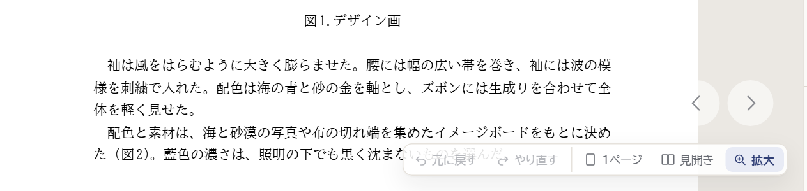
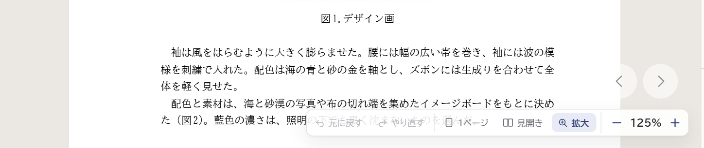
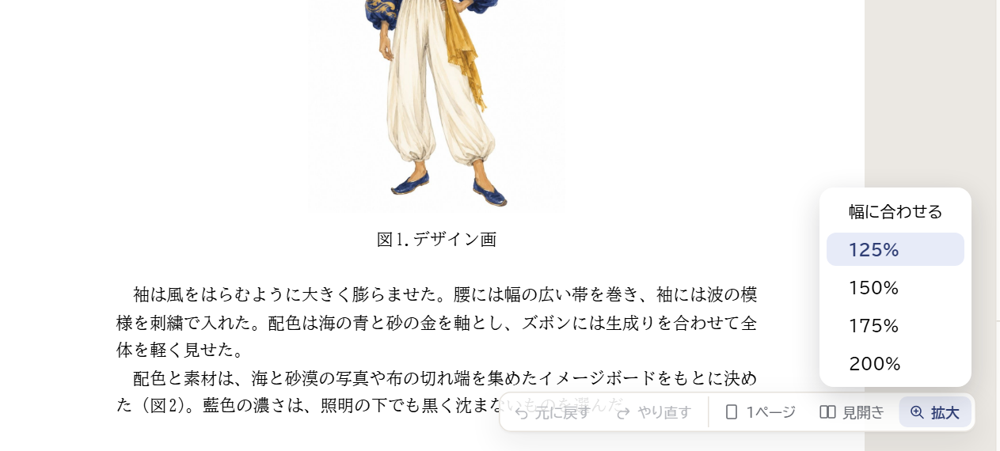
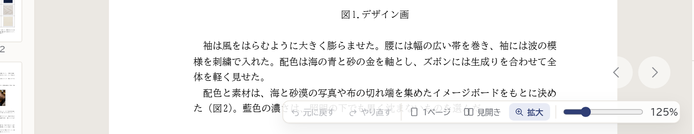
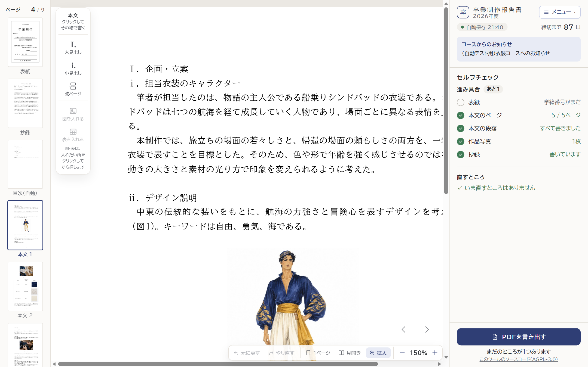

いまの「拡大」は、紙面の横幅を画面の真ん中の幅に合わせる、決まった大きさです。どの案も、倍率は「拡大」を押しているときだけ変えられ、次に開いたときも同じ倍率で拡大します（スマホは今までどおり、2本の指で広げます）。
倍率は変えられません

押すたびに1段ずつ（100・125・150・175・200%）。いまの倍率がいつも見える

「幅に合わせる」「125%」…から選ぶ。ふだんは窓を閉じていて、すっきり

つまみを動かして、細かく決める（5%ずつ）。細かく決められるが、小さくて動かしにくい

字が大きくなる分、行の終わりは画面の右に隠れます（下の横のバーか、Shift＋ホイールで動かします。書いている所には、自動でついていきます）

100% は、いまの「拡大」と同じ大きさです。